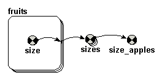

Enumerated types allow
you to refer to a each object in a collection by name, where the alternative is
to use an arbitrary index number. To understand what is meant by an arbitrary
index number, consider the following contrasting situations.
Let’s say, for example, that you want to
model soil water dynamics, with the soil divided into (say) four layers. You would create a submodel with four
instances, numbered 1 to 4. You can then
find the value for water content in the third layer using an expression such as
element([water],3). In this case, the
index number refers meaningfully to the layer number.
Now, suppose you wanted to model the growth and yield of four fruit trees: say apples, oranges, lemons and pears. You could use the above approach, creating a submodel with four instances, but in this case you would have to remember that instance 1 is “apples”, 2 is “oranges”, and so on. The index number is now an arbitrary index number.
The enumerated type mechanism enables you to associate the name of each fruit with each instance of the submodel, and to use this name (rather than a number) when referring to a particular instance. This considerably increases the clarity of your model, since someone trying to follow the logic of the model does not need to keep on checking up on the correspondence between an integer number and some more meaningful label.
Before you can use an enumerated type, you must define it. Enumerated types are defined at the level of the submodel. All submodels contained within the submodel in which the type is defined also have access to the definition. It is therefore most simple to define it for the whole model (so that any submodel in the model can then use it). To do this:
The following model diagram will serve to
illustrate how an enumerated type can be used. It shows a variable size inside
a multiple-instance submodel (one instance for each fruit). This variable is
exported as an array outside the submodel, then one value is picked up from
this array.

If this model were set up without using an enumerated type, then the following would be used:
Submodel
fruit: Number of instances (using specified dimensions): 4
Variable
size: if index(1)==1 then 4.2 else 3.7
Variable
sizes: [size] (Dimensions are automatically set to 4)
Variable
size_apples: element([sizes],1)
If this model (with the same model diagram) were set up using an enumerated type (e.g. fruit, as defined above), then the following would be used:
Submodel
fruit: Number of instances (using specified dimensions): fruit (i.e. the name of the enumerated type is
entered into the dimensions edit field, and automatically sets the number of
instances for the submodel to the number of values in the enumerated type - in
this case, four.)
Variable
size: if index(1)=="apples" then 4.2 else 3.7
Variable
sizes: [size] (dimensions are automatically set to fruit)
Variable
size_apples: element([sizes],"apples")
The same enumerated type can be used in
several places. For example, you could have another submodel that also has
dimensions of fruit.
Note that the only test we can do with an enumerated type value is a test of equality with the index of a submodel (if index(1)=="apples"...). We can't use the greater-than or less-than operators, since the list is unordered (what a statistician would call nominal rather than ordinal).
Instead of typing the names into the list of members, when creating a new enumerated type, it is easy to read the names from a file. Create the type, e.g. “fruit” as above, and then click the “Get from file” button. This will open the table dialogue box. Use this to create an array of the names from a column in the CSV file.
You can use the member names as indices when reading parameter values from a file. This is particularly convenient when the file was used to create the list of member names.
For example, the following file could be used
fruit,
price
apples,
7.0
oranges,
7.4
lemons,
7.2
pears,
8.1
You can use the makearray function to create an array. For example, the equation
makearray(1,“fruit”)
will create an array with dimensions (size) equal to the number of members in the enumerated type “fruit”. It will be populated with values of 1. You can use the test place_in(n)==member to set each value separately. For example, the equation
makearray(if
place_in(1)=="apples" then 7.0 elseif place_in(1)=="oranges"
then 7.4 elseif place_in(1)=="lemons" then 7.2 else 8.1, "fruit")
will result in the same array as the above
table.
In programming, a type is a set of values
from which a variable may take its value. Thus if a variable is of type “integer”,
then this set of values is all the whole numbers. If it is of type “real”, then
it is the set of all decimal values that can be represented on the computer. If
it is an enumerated type, then the set of values is defined by an explicit list
of all the values that the variable is allowed to take. The standard example is the enumerated type “days
of the week”, in which the set of allowed values is given by the list [Monday,
Tuesday, Wednesday, Thursday, Friday, Saturday, Sunday]. A particular variable (e.g. “washing day”) can
be defined to be of this type: we then know that its value must be one of these
seven possible values.